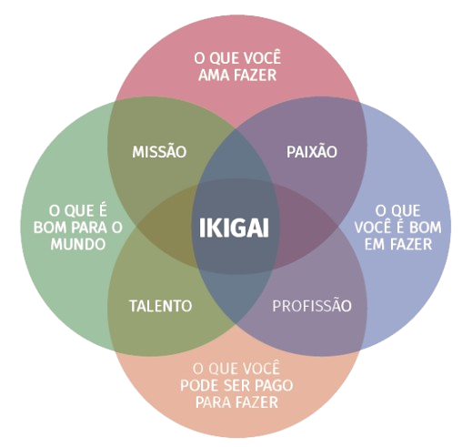

IKIGAI
O conceito japonês de Ikigai pode ser aplicado como uma ferramenta para ajudar as pessoas a encontrar seu propósito de vida, o que, por sua vez, pode levar a um maior bem-estar e saúde mental. O termo, que significa "razão de viver", busca a intersecção de quatro elementos essenciais:
Vamos aprofundar cada um deles?

Vamos iniciar o uso dessa ferramenta respondendo às perguntas direcionadas a cada uma dessas áreas
Minha jornada Ikigai